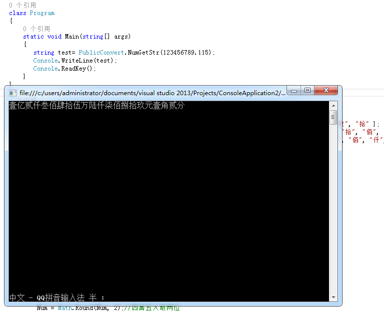

不知道大家有没有遇到需要将数字转成中文大写的需要，如下图

这是转换的代码，有需要的的Ctr+C吧，不谢。
public class PublicConvert
{
private static String[] Ls_ShZ = { "零", "壹", "贰", "叁", "肆", "伍", "陆", "柒", "捌", "玖", "拾" };
private static String[] Ls_DW_Zh = { "元", "拾", "佰", "仟", "万", "拾", "佰", "仟", "亿", "拾", "佰", "仟", "万" };
private static String[] Num_DW = { "", "拾", "佰", "仟", "万", "拾", "佰", "仟", "亿", "拾", "佰", "仟", "万" };
private static String[] Ls_DW_X = { "角", "分" };
/// <summary>
/// 金额小写转中文大写。
/// 整数支持到万亿；小数部分支持到分(超过两位将进行Banker舍入法处理)
/// </summary>
/// <param name="Num">需要转换的双精度浮点数</param>
/// <returns>转换后的字符串</returns>
public static String NumGetStr(Double Num)
{
Boolean iXSh_bool = false;//是否含有小数，默认没有(0则视为没有)
Boolean iZhSh_bool = true;//是否含有整数,默认有(0则视为没有)
string NumStr;//整个数字字符串
string NumStr_Zh;//整数部分
string NumSr_X = "";//小数部分
string NumStr_DQ;//当前的数字字符
string NumStr_R = "";//返回的字符串
Num = Math.Round(Num, 2);//四舍五入取两位
//各种非正常情况处理
if (Num < 0)
return "不转换欠条";
if (Num > 9999999999999.99)
return "很难想象谁会有这么多钱！";
if (Num == 0)
return Ls_ShZ[0];
//判断是否有整数
if (Num < 1.00)
iZhSh_bool = false;
NumStr = Num.ToString();
NumStr_Zh = NumStr;//默认只有整数部分
if (NumStr_Zh.Contains("."))
{//分开整数与小数处理
NumStr_Zh = NumStr.Substring(0, NumStr.IndexOf("."));
NumSr_X = NumStr.Substring((NumStr.IndexOf(".") + 1), (NumStr.Length - NumStr.IndexOf(".") - 1));
iXSh_bool = true;
}
if (NumSr_X == "" || int.Parse(NumSr_X) <= 0)
{//判断是否含有小数部分
iXSh_bool = false;
}
if (iZhSh_bool)
{//整数部分处理
NumStr_Zh = Reversion_Str(NumStr_Zh);//反转字符串
for (int a = 0; a < NumStr_Zh.Length; a++)
{//整数部分转换
NumStr_DQ = NumStr_Zh.Substring(a, 1);
if (int.Parse(NumStr_DQ) != 0)
NumStr_R = Ls_ShZ[int.Parse(NumStr_DQ)] + Ls_DW_Zh[a] + NumStr_R;
else if (a == 0 || a == 4 || a == 8)
{
if (NumStr_Zh.Length > 8 && a == 4)
continue;
NumStr_R = Ls_DW_Zh[a] + NumStr_R;
}
else if (int.Parse(NumStr_Zh.Substring(a - 1, 1)) != 0)
NumStr_R = Ls_ShZ[int.Parse(NumStr_DQ)] + NumStr_R;
}
if (!iXSh_bool)
return NumStr_R + "整";
//NumStr_R += "零";
}
for (int b = 0; b < NumSr_X.Length; b++)
{//小数部分转换
NumStr_DQ = NumSr_X.Substring(b, 1);
if (int.Parse(NumStr_DQ) != 0)
NumStr_R += Ls_ShZ[int.Parse(NumStr_DQ)] + Ls_DW_X[b];
else if (b != 1 && iZhSh_bool)
NumStr_R += Ls_ShZ[int.Parse(NumStr_DQ)];
}
return NumStr_R;
}
public static string Reversion_Str(string input)
{
char[] array = input.ToCharArray();
IEnumerable<char> cs = array.Reverse<char>();
char[] array1 = cs.ToArray<char>();
string result = new string(array1);
}
}